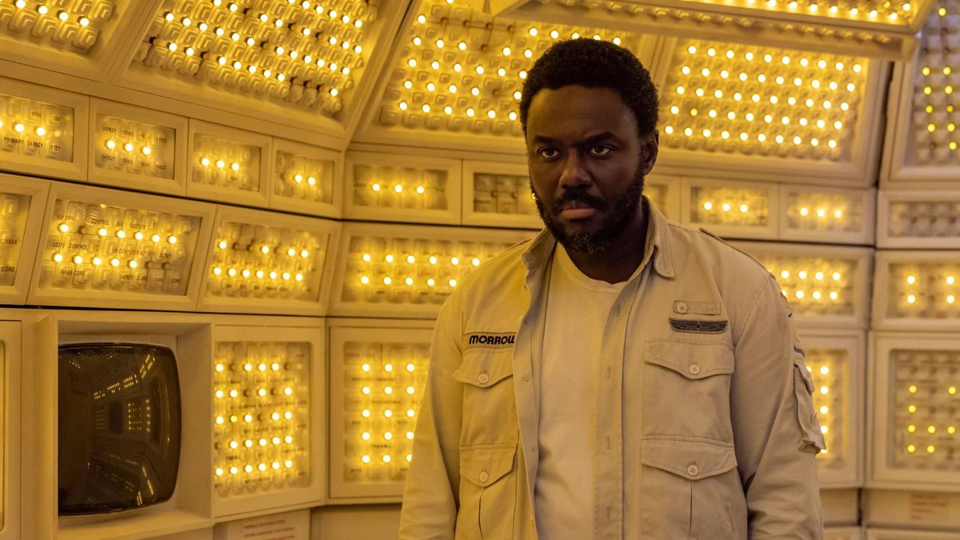
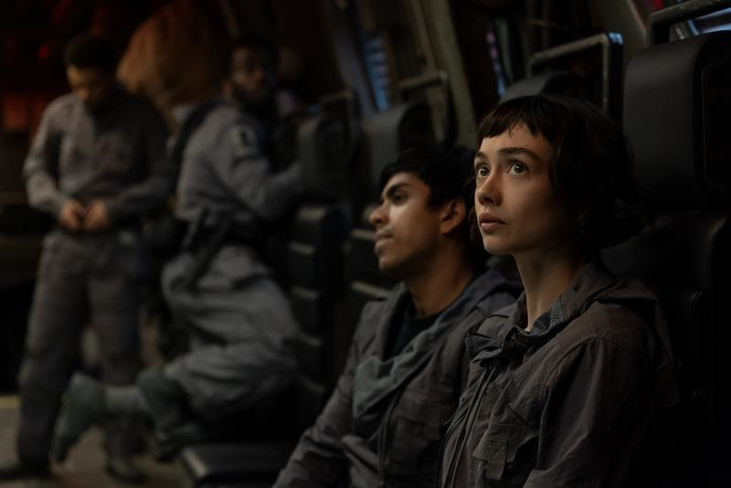
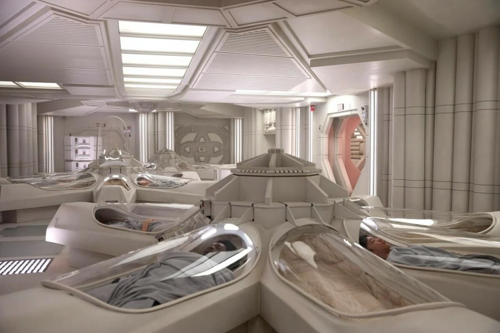
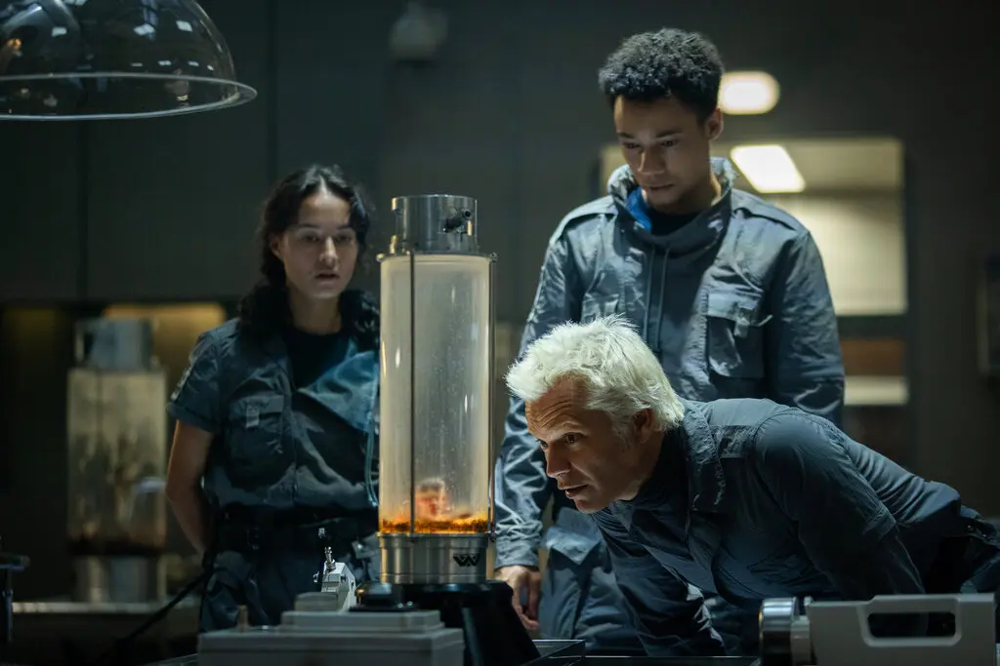
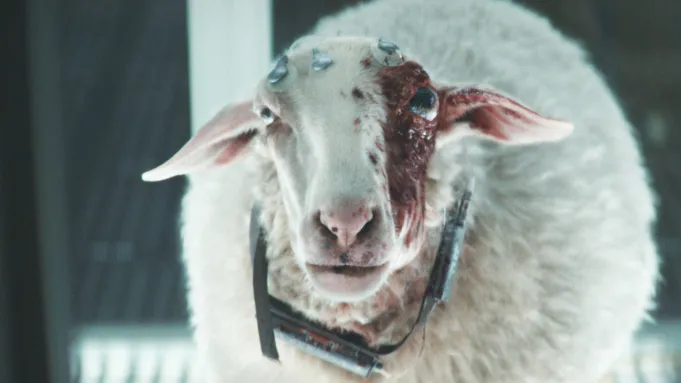
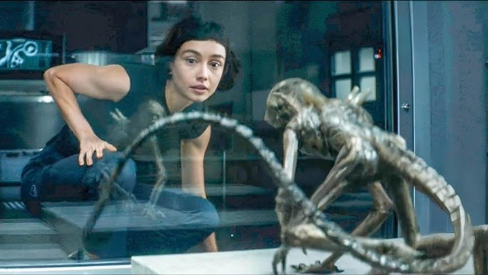

Alien: Earth Episodes - Ranked

Find out which episodes were the best (and the worst) in the first season of FX's new series Alien: Earth.
Written by Maxwell Williams
- Episode 5: In space, no one...
It makes sense that the current highest rated episode of the series is the one that returns to the original Alien form. Set on the USCSS Maginot, this episode serves as a callback to the first episode, where the events that took place on the ill-fated deep space research vessel are finally revealed in their full glory, providing us with the juicy details of how actions of the ship's crew - including a corporate betrayal - would lead to its demise. We also get to find out about Morrow's backstory, revealing he's far more human than we previously thought.
 - Episode 2: Mr. October
In this one we get the most anticipated aspect of the show: seeing a xenomorph unleash some carnage on Earth. Other things happen too, lke the Lost Boys are questionably dispatched to conduct a rescue mission in the crashed Maginot. We also see two characters reunited.
 - Episode 1: Neverland
The pilot moves fast and provides lots of details with no context. We're introduced to Marcy - turned Wendy - as well as the rest of the Lost Boys. Meanwhile in space, we witness glimpses of the xenomorph on the USCSS Maginot. Additionally, we're introduced to the sole, somewhat human survivor of its ensuing crash: Morrow.
 - Episode 3: Metamorphosis
A continuation of the crash aftermath seen in episode 2, we see that the hybrid Wendy is indeed a match for a xenomorph. As the alien specimens are secured and brought back to Neverland research island, new questions about the intentions of Prodigy staff arise.
 - Episode 4: Observation
This episode takes on a slower pace compared to the hectic events surrounding the crash site. However, we are introduced to a new alien specimen: The Eye. This creature's horrifying introduction proves that not all monsters need to be big like a xenomorph to still be terrifying.
 - Episode 6: The Fly
Wendy begines to question her role on the island. Meanwhile, we see that while the hybrids are strong, one of the alien specimens poses a unique threat to their synthetic bodies, resulting in the surprisingly grotesque and unexpected demise of one of the lost boys.

Leave a comment on this article: